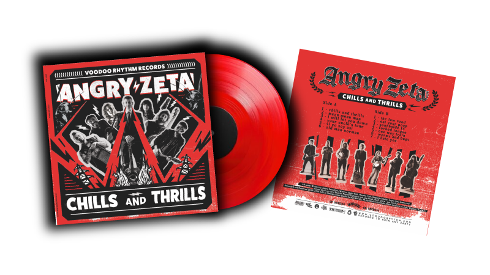
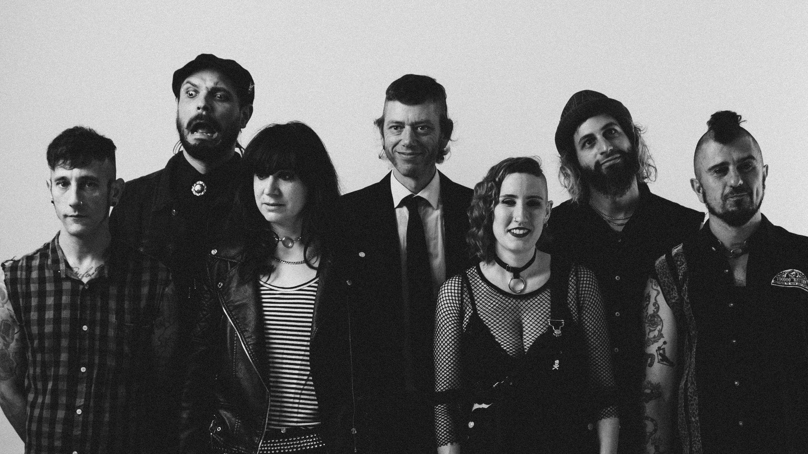

Chills and Thrills
Released June algo, 2024. Hit the Billboard charts Bluegrass Albums at #2 the week of August 31st, 2024. (este lo dejamos aunque sea mentira(?))
About the album
“Chills and Thrills” is a chilling and thrilling album that contains 11 original songs where they talk about some people they hate, places they’ve been, eating poop, something about trains and other personal experiences. This sound is the most themselves they’ve ever been so far, going to darker places in songs like “Chills and Thrills” or “Sonnhalde”, smoother rhythms like “I hate you” or “worms and bugs”, hit songs for singing at the irish pub with your drunk friends like “forked tongue” and the soundtrack you asked santa for listening while riding the train (“one way train”), amongst others. They also wrote a catchy song called “I will let you down” so you can learn the chorus and sing it to your parents. We can also find two covers in the album. One from the mythical Argentinian punk band “Flema”, with less distortion but the same amount of punk in it. The second cover is “Low Road”, a rockabilly song by Mac Curtis but with such an explosive twist and so much screaming that you’ll get their spit on your face even when listening to the recorded version.
About the recording of the album
After a 3-month super intense tour around Europe, Angry Zeta had enough energy left to go to Italy to meet in person the famous (infamous?) Outside Inside Studio. Because of budget limitations they did a 3-day recording session for the 13 songs included in the album with the amazing Matt Bordin, their favorite hipster audio engineer, fan an owner of every kind of analog audio equipment, expert of getting the best sound out of live bands with his collection of super pro microphones and something something…
About Angry Zeta
Angry Zeta was founded in 2015 in Buenos Aires Argentina as originally a traditional bluegrass country hillbilly street busker band and were then constantly integrated into the local punk scene and their clubs where they found their punk and Rock’n’Roll Crust Sound, today they mix everything into a molasses of punk Hillbilly folk and raw street music together, they tour all over the world in clubs, festivals (Muddy Roots, Billy rock, san pedro country music festival, San Antonio Rat Parts Festival, Kids and Billy’s, Open Folk Festival, Rotterdam Bluegrass Festival, etc) and on the street, amplified or fully acoustically flexible, they give you such a great folk punk that you don't always know where you are standing, what we love on Angry Zeta the most: they Started Small and they are walking their very own way to the top of Crust Street Rock’n’Roll Folk Punk Heaven. Angry Zeta are an unlikely mix of punk, country and Hillbilly hoe-downs from the even more unlikely locale of Argentina! But rather than taking the usual mid-mannered, middle-class approach to folk or (eek!) world-music, these guys are intent on putting some genuine attitude and authenticity into their music, just the same way that The Pogues approached Irish music, or Kultur Shock approached Balkan culture. It’s not done in an affected or pretentious way, it’s done with a real love and joy for the songs and their words (even if you shouldn’t take them entirely seriously!) Like the Hickoids before them, this is music that’s here to be enjoyed. I could imagine these guys whipping-up a real storm onstage, but whether you get a chance to see them live or not, do your best to hear this album. -Beatman- Voodoo Rhythm Records
About their live show
Here's a super cool post about a new fan they made last tour where she makes them seem awesome
About their live album
I found a new band to love from Argentina! Angry Zeta & The Hillbullys are from Buenos Aires and Live is the bands second release. The band play mostly Country-Punk (it use to be called Cow-Punk back in the day) versions of famous C’n’W and Cowboy songs like ‘Rawhide’, ‘Sam Hall’ and ‘Cocaine Blues’. The music is intense acoustic music with the spirit of the west throughout. Male and female shared vocals compete with some absolutely astounding banjo plucking and fiddle work as well as some double bass pounding. Their debut album is available as a ‘Name Your Own Price’ download on the Bandcamp link below if you want a taster of Live go check that out. The band have toured Europe before so keep an eye for them appearing at anytime. It’s a really good recording that at times is very hard to tell its recorded live. I also couldn’t tell if there any originals on here but the ones that I know are covers are done in such an original way and with a passion and energy flowing through them they may as well be Angry Zeta & The Hillbullys own songs anyway! Text extracted from here
Social Reach
- Spotify 3,000+ Monthly Listeners
- Instagram 20,000+ Followers
- Youtube 1,000,000+ Video Views
- Facebook 8,000+ Followers
Highlights
- Tours across Europe (Germany, Switzerland, Belgium, Netherlands, England, France and Spain) with acts such as Bridge City Sinners and Holy Locust. (re hay más bandas para meter acá…y sacar holy locust porque en realidad no compartimos con ellos)
- Tours across Brazil, Colombia and Argentina…
- Currently signed with Voodoo Rhythm Records Label
- Featured on Spotify editorial “Grass Roots” Playlist (la de Clyde McGee)
- Featured on Muddy Roots BA Vol.01
Line up:
- Zeta - Guitar/Main vocals
- Waltzer - Fiddle/Vocals
- Banjo Bob - Banjo/Vocals
- Maraña - Double Bass/Clawhammer banjo/Vocals
- Tukas - Washboard/Drums/Spoons
- Testi - Double Bass/Banjolele/Vocals
- Hugo - Mandolin/Vocals